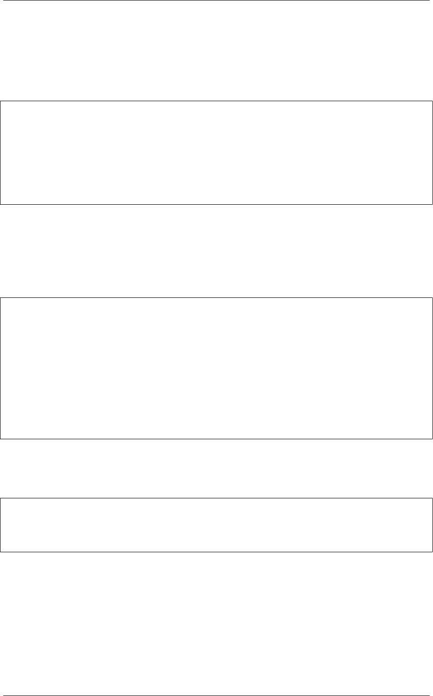

《Python Cookbook》第三版, Release 2.0.0
3.6.2 解决方案
一个字典就是一个键对应一个单值的映射。如果你想要一个键映射多个值，那么你
就需要将这多个值放到另外的容器中，比如列表或者集合里面。比如，你可以像下面
这样构造这样的字典：
d={
'a': [1,2,3],
'b': [4,5]
}
e={
'a': {1,2,3},
'b': {4,5}
}
选择使用列表还是集合取决于你的实际需求。如果你想保持元素的插入顺序就应该
使用列表，如果想去掉重复元素就使用集合（并且不关心元素的顺序问题）。
你可以很方便的使用 collections 模块中的 defaultdict 来构造这样的字典。
defaultdict 的一个特征是它会自动初始化每个 key 刚开始对应的值，所以你只需要
关注添加元素操作了。比如：
from collections import defaultdict
d=defaultdict(list)
d['a'].append(1)
d['a'].append(2)
d['b'].append(4)
d=defaultdict(set)
d['a'].add(1)
d['a'].add(2)
d['b'].add(4)
需要注意的是， defaultdict 会自动为将要访问的键 (就算目前字典中并不存在这
样的键)创建映射实体。如果你并不需要这样的特性，你可以在一个普通的字典上使用
setdefault() 方法来代替。比如：
d={} # A regular dictionary
d.setdefault('a', []).append(1)
d.setdefault('a', []).append(2)
d.setdefault('b', []).append(4)
但是很多程序员觉得 setdefault() 用起来有点别扭。因为每次调用都得创建一个
新的初始值的实例 (例子程序中的空列表 [])。
3.6.3 讨论
一般来讲，创建一个多值映射字典是很简单的。但是，如果你选择自己实现的话，
那么对于值的初始化可能会有点麻烦，你可能会像下面这样来实现：
3.6. 1.6 字典中的键映射多个值 16